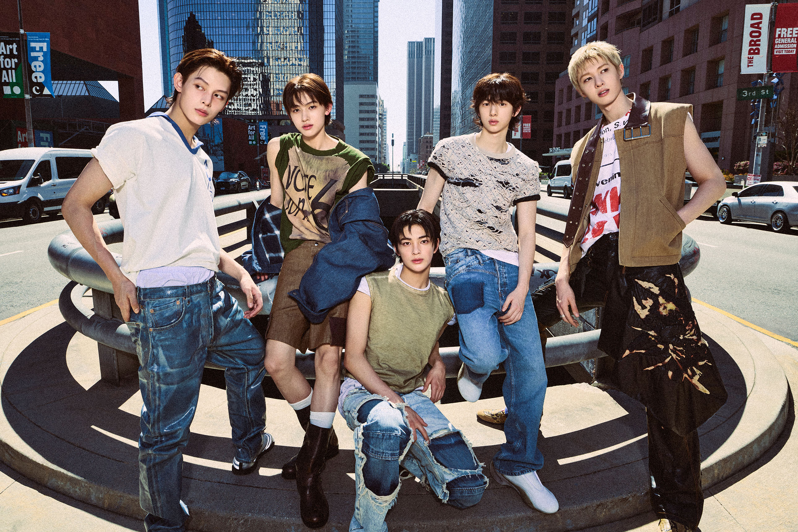
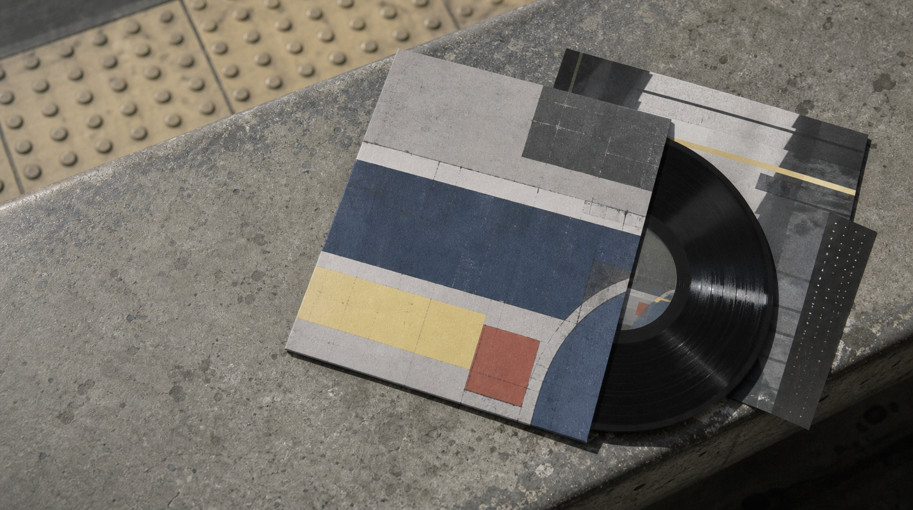
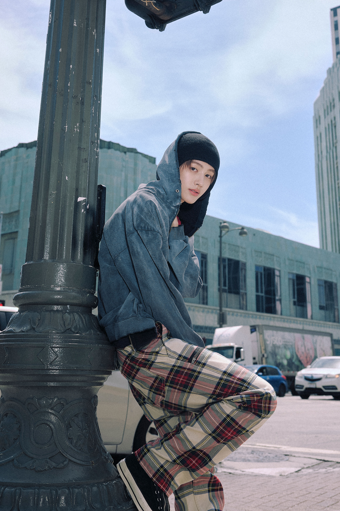
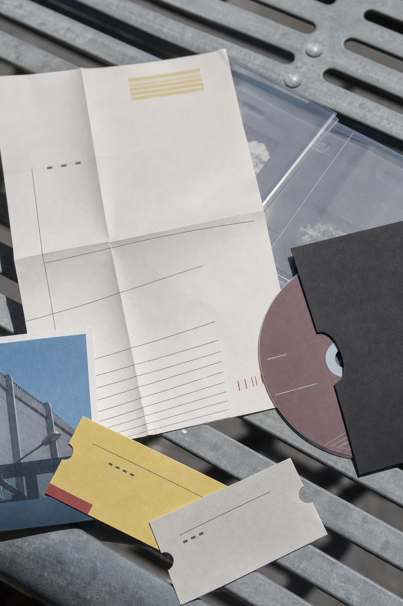
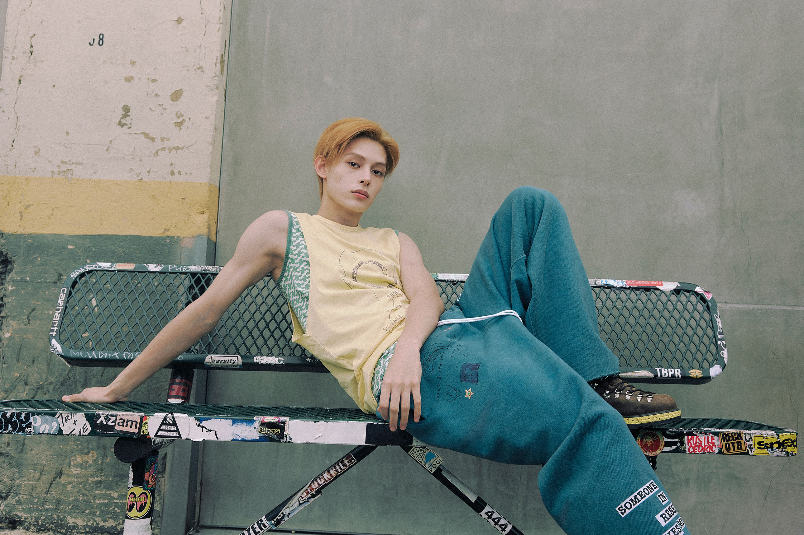
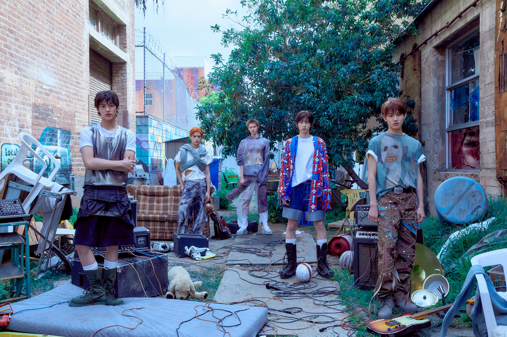

THE 1ST EP / ARTIST FEATURE / BIGHIT MUSIC
CORTIS
CORTIS
MARTIN
JAMES
JUHOON
SEONGHYEON
KEONHO
COLOR OUTSIDE
THE LINES
정해진 선 밖으로 나아가는 다섯 명의 첫 장면.
음악, 안무, 영상을 직접 만들어 가는 영 크리에이터 크루.

ABOUT
US
CORTIS는 MARTIN, JAMES, JUHOON, SEONGHYEON, KEONHO로 이루어진 다섯 멤버의 팀이다. 정해진 답보다 자신들이 진짜 원하는 것을 찾는 움직임에서 출발한다.
데뷔 EP COLOR OUTSIDE THE LINES는 질문에서 시작된 기록이다. 멤버들은 2년간 300여 곡을 만들고, 가장 자신다운 다섯 트랙을 골랐다. 모든 멤버가 앨범 크레디트에 참여했으며 안무와 영상 제작에도 아이디어를 더했다.
선 밖에서, 그들만의 방향을 직접 그린다.

WHAT YOU WANT?
진짜 원하는 것을 향해
선을 벗어나 움직이는 첫 EP.
THE FIRST STEP / THE FIRST COLOR / THE FIRST LINE THEY DRAW THEMSELVES




THE 1ST EP
COLOR
OUTSIDE
THE LINES
코르티스의 데뷔 앨범은 세상이 요구하는 틀 대신, 자신들이 선택한 방향을 밀어붙이는 다섯 청춘의 선언이다. 힙합, 팝, 사이키델릭 록, 얼터너티브 록의 질감이 하나의 거친 에너지로 이어진다.
타이틀곡 What You Want는 붐뱁 리듬과 60년대 사이키델릭 록 기타 리프를 결합해, 원하는 것을 주저하지 않고 손에 넣겠다는 자신감을 전한다.
TRACK LIST / 2025.09.08
- 01GO!OPENING TRACK
- 02What You WantTITLE TRACK
- 03FaSHioNTRACK
- 04JoyRideTRACK
- 05LullabyTRACK
- 06What You Want (Feat. Teezo Touchdown)DIGITAL ONLY
MEMBER INDEX
FIVE
VOICES

- MARTINCORTIS / MEMBER 01
- JAMESCORTIS / MEMBER 02
- JUHOONCORTIS / MEMBER 03
- SEONGHYEONCORTIS / MEMBER 04
- KEONHOCORTIS / MEMBER 05